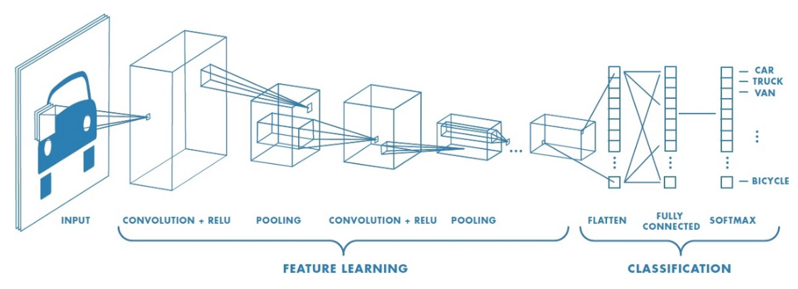

Introduction
In the US, 9,500 patients are diagnosed with skin cancer daily, making it the most common form of cancer in the country. If left untreated, it can be fatal, as it can spread to tissues and bones. But in low-income and rural communities, where access to healthcare can be limited, there is a risk of not receiving detection and treatment in time. Fortunately, recent developments have led to a new application of the convolutional neural network (CNN), a machine learning model that can process image data, to provide a more efficient and affordable mechanism to identify types of skin cancer. By identifying and extracting distinctive features in each skin condition, a CNN model efficiently learns features from skin cancer images; therefore, it provides an early, efficient, and accurate detection of skin cancer.
What are CNNs?
Invented in the 80s by Yann LeCun, a computer science researcher, CNNs, a popular model used in machine learning, can be used to classify images. For example, if shown cat and dog images, a CNN can learn each animal’s distinctive traits and classify a new image into the correct category. In the healthcare field, CNNs can serve as early detection devices for people who may have skin cancer.
How do CNNs work to detect skin cancer?
When CNNs encounter fed-in data of skin cancer images, their kernels, or matrices of numbers that serve as weights, can help determine which parts of the data are important. A kernel scans over the skin cancer image, and the kernel’s numbers are multiplied with the inputted data (each part of the image can be transformed into different values) to extract the most important features and patterns to produce an output. In classification tasks, such as detecting the type of skin cancer, that output can be the name of a category of an image, such as melanoma.
As the images are being scanned by the CNN and transformed into matrices of values, they also go through pooling layers to reduce image dimension sizes to reduce the complexity of CNN computations and retain only important features, such as the characteristic brown wavy shape of melanoma. These layers help the CNN model learn distinctive features of each form of skin cancer. Next, a ReLU, or Rectified Linear Unit, is added to introduce nonlinearity in the CNN model since real-life data and patterns are not always linear. Afterward, the flatten layer flattens the matrix of values into a one-dimensional shape and utilizes the fully connected layer to combine all the features the model learned together. Lastly, the softmax activation function produces the output of the model.
Figure 1: the CNN architecture scans a car image; in this case, the correct output would be a car.
How can people use CNNs in real-time?
When a CNN model is trained on a skin cancer dataset to detect and classify different types of skin cancers with above 90% accuracy, it can be deployed into a web or mobile app, where patients can take a picture of their skin condition and upload it to the app to see the identification and classification output. The app can be accessible and free for patients around the world to receive an early and efficient detection at home.
How does the CNN model improve survival rates, save lives, and reduce costs?
Early detection of cancer is extremely critical for patients’ survival rates. CNNs can be trained and set up easily to help patients detect and keep track of any skin condition that emerges, providing a quick and early detection of potentially dangerous skin conditions that then allows patients to seek subsequent and necessary medical procedures promptly to increase the survival rate. Early detection of cancer also reduces the overall medical cost that would have been incurred if patients were to be treated for later stages of cancer. Thus, CNNs would not only be more affordable to patients but also free up health care resources in communities to focus more on health promotion and disease prevention.
Conclusion
With the advent of machine learning technology and extensive research into its applications, CNNs have become a more convenient and affordable solution to detect skin cancer at home. A recent paper by Telkom University researchers recorded a staggering 99% skin cancer classification accuracy with a CNN (Fu’adah et al., 2020). An accurate CNN model like this can be commercialized to help reduce skin cancer fatality and preserve lives, as it provides a convenient and affordable tool for early detection, especially for people who need it the most in rural and low-income communities, especially during the current COVID pandemic.
References
[1] “Skin Cancer,” American Academy of Dermatology, [Online].Available: https://www.aad.org/media/stats-skin-cancer#:~:text=Skin%20cancer%20is%20the%20most%20common%20cancer%20in%20the%20United%20States.&text=Current%20estimates%20are%20that%20one,skin%20cancer%20in%20their%20lifetime.&text=It%20is%20estimated%20that%20approximately,with%20skin%20cancer%20every%20day. [Accessed: 17-Apr-2022].
[2] “Skin Cancer Facts & Statistics,” The Skin Cancer Foundation, March 2022. [Online]. Available: https://www.skincancer.org/skin-cancer-information/skin-cancer-facts/. [Accessed 17-April-2022].
[3] “The Dangers of Leaving Skin Cancer Untreated,” Vanguard Dermatology, [Online].Available: https://www.vanguarddermatology.com/blog/skin-cancer-awareness-month-the-dangers-of-leaving-skin-cancer-untreated. [Accessed: 17-Apr-2022].
[4] Dickson, Ben, et al., “What Are Convolutional Neural Networks (CNN)?” TechTalks, January 2020. [Online]. Available: https://bdtechtalks.com/2020/01/06/convolutional-neural-networks-cnn-convnets/#:~:text=Convolutional%20neural%20networks%2C%20also%20called,a%20postdoctoral%20computer%20science%20researcher. [Accessed 17-April-2022].
[5] Ganesh, Prakhar., “Types of Convolution Kernels: Simplified,” Medium, Towards Data Science, October 2019. Available: https://towardsdatascience.com/types-of-convolution-kernels-simplified-f040cb307c37. [Accessed:17-Apr-2022].
[6] Raghav, Prabhu, “Understanding of Convolutional Neural Network (CNN) - Deep Learning,” Medium, November 2019. [Online]. Available: https://medium.com/@RaghavPrabhu/understanding-of-convolutional-neural-network-cnn-deep-learning-99760835f148. [Accessed 17-April-2022].
[7] “How Cancer Is Diagnosed,” National Cancer Institute, [Online]. Available: https://www.cancer.gov/about-cancer/diagnosis-staging/diagnosis. [Accessed 17-April-2022].
[8] Fu’adah, Y. N., Pratiwi, N. C., Pramudito, M. A., & Ibrahim, N. (2020, December). Convolutional Neural Network (CNN) for Automatic Skin Cancer Classification System. In IOP Conference Series: Materials Science and Engineering (Vol. 982, No. 1, p. 012005). IOP Publishing. Available: https://doi.org/10.1088/1757-899X/982/1/012005. [Accessed: 17-Apr-2022].